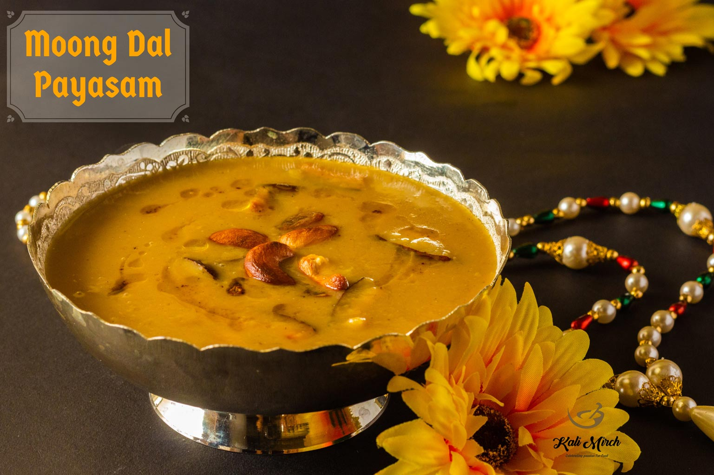

The cuisine in India is as vast and wide ranging as its multi ethnic culture.
The delicious and the exotic dishes of India are marked by the subtle uses of spices and herbs.
Indian cuisines vary widely from region to region. Different regions adopt different cuisines.
India is proud to serve the most diverse cuisine in the whole world.
Every region has their own specialties and different way of cooking.
The style of cooking, flavor and their specialties change with the landscapes.
Most of the Indian cuisines are vegetarian but the Indians also love non-vegetarian delicacies cooked out of fish, lamb, goat, chicken and other meats.
Food has always been important to the culture of India.
Cuisine Map of India
North Indian Cuisine
North Indian Cuisine is largely influenced by the Mughal style of cooking. In their nearly 500 years rule over India, they contributed a lot to India including cuisine.
Since the Mughals were originally from central Asia, the cuisine bears much similarity to the central Asian style of cooking.
Abundant uses of butter based curries and dried fruits and nuts are striking features of north Indian cuisine. Wheat that grows profusely in northern India forms the larger portion of north Indian meal.
Contrary to the southern and Northern part of India where rice is the staple food, north India lives on Roti, Chappatis, Paratha and Tandoori all made from wheat.
Lots of oil, ghee, butter along with rich spices are used as the medium for cooking which lend the north Indian food a very strong flavor.
Meat also enjoys a special place in north Indian cuisine. A variety of Kebabs and Biriyanis (a tantalizing marinade of rice and meat) bear the Mughal legacy.
Samosa is possibly the most popular snack in north India. Lassi is another beverage made from curd, which has an overwhelming taste. Gulab Jamun, Motichur Laddoo are popular sweets in this region.
Some interesting north Indian dishes are Reshmi Kabab, Seekh Kabab, and Shammi Kabab, Kashmiri Pulao, Tandoori Chicken and Mutton to name only a few.
Samosa
Gulab Jamun
Golgappa
Chole Bhature
South Indian Cuisine
South Indian cuisine is equally popular in other parts of India.
In other parts of this country, ask anyone for which other Indian cuisine they would prefer for a change. Most would reply 'South Indian'.
Four different states, like: Andhra, Tamil Nadu, Karnataka and Kerala constitute of the southern part of India. There are four different schools too in south Indian cuisine.
So south Indian cuisine is a vegetarian's delight.
Another striking feature in south Indian cuisine is the use of coconut oil.Coconut oil lends the south Indian food a very special flavor.
In most of the delicacies, coconut is also used profusely.
Rice is staple food here too. Idly, Dosa, Vadas and Uttapams, made from rice ground with lentil, are popular south Indian specialties, mostly in Tamil Nadu.
Also try spicy, oily and aromatic Chettinad cuisine while you are in Tamil Nadu.
In some parts of South India like Andhra Pradesh, Biriyani prepared from rice and mixed with meat is a masterpiece. The dish has a rich heritage of Mughal association.
In the Malabar coasts, like Kerala, they make fantastic delicacies of sea fish including crab and prawn. The strong aroma of spices is another charm of cuisine of Malabar Coast.
Dosa
Medu-Vadai
Idli

Moong Dal Payasam
East Indian Cuisine
The eastern region of India consists of states like Bihar, West Bengal and Orissa.
Rice is the staple food in eastern region of India.
Due to the favorable climate, eastern India grows a lot of rice. Quite contrary to the north India where wheat is dominant, rice serves as integral part of nay meal in the eastern India.
Along with that, fishes are also available in abundance in the rivers and ponds in this region. Fish is also a favorite item of the people of eastern India.
A wide variety of dishes are prepared from fishes.
Hilsa is the most popular fish in eastern India.
Mostly available during the monsoons, this is famous for its unforgettable taste.
Several delicacies are made of Hilsa, and also other popular varieties of fishes like: Rohu, Vetki etc, which are sure to tickle your taste bud.
Plenty of vegetables are also grown in this part of India.
Vegetables also form a substantial part of Eastern Indian meals.
The spices used in their cuisine are also markedly different from those used in the other parts of India.
Sweets are a striking feature in Eastern Indian Cuisine.
The people from the eastern region seem to have a sweet tooth.
Most of the eastern Indian cuisines have a tendency to be sweet.
In West Bengal, Rasgulla is a fantastic delicacy that has earned global acclaim.
You may also try Mishti Doi (sweetened yogurt) while in eastern region of India.
Litti Chokha
Momos
Dalma Curry
Bengali Rasgulla
West Indian Cuisine
Geographical heterogeneity has given rise to a variety of dishes in the western part of India.
Varying landscape from the arid deserts to wet coastal are has contributed to the versatility of cuisine here.
At the same time, western India is a melting pot of several races and traditions.
So various influences are seen in its variety of dishes.
Rice is the staple food in the western India too.
Wheat, bajra and jowar are also consumed in regions such as in Gujarat and Rajasthan.
In Gujarat region and of course Mumbai you would find Parsi influences in their cuisine.
Vegetarian dishes like Pav Bhajis, Bhel puris and Dhoklas are gourmet's delight here.
Due to concentration of the Jains in Gujarat, the state excels in vegetarian cuisine with the subtle use of spices and rich texture.
In the coastal areas of Maharashtra and Goa, sea fishes are available in abundance.
Preparations of sea fishes marinated in tantalizing spices are sure to tickle your taste buds. Goa , with its signature Portuguese influence has specially won the heart of food lover through stomach with the exotic seafoods including crab, prawn.
The food of Rajasthan is rich in spices. But if you can brave a little spicy affair, you may be able to enjoy the Rajasthani cuisine.